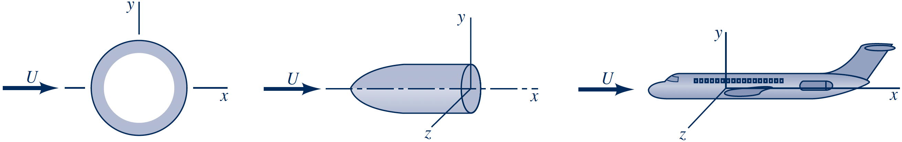
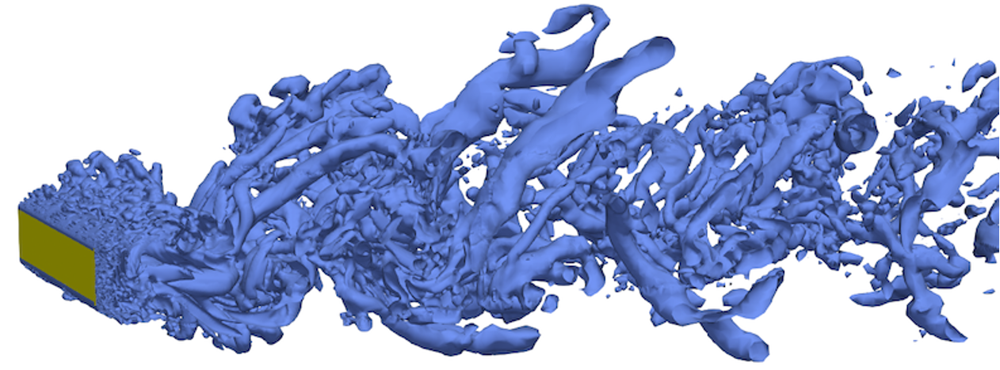
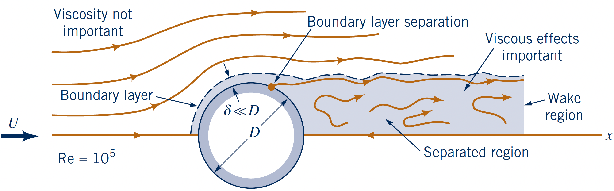

Fluid Mechanics Course
External flows
Lecturer: Jacob Andersen
Slides by Jacob Andersen (AAU BUILD) and Jakob Hærvig (AAU ENERGY)
Introduction to External Flows
External flows: Flow around bodies immersed in fluid
Examples:
- Air flow around (aerodynamics):
- buildings
- wind turbine blade
- airplanes
- cars
- Water flow around (hydrodynamics):
- offshore wind turbine foundation
- vessels
- submarines
- water turbine
Analysis of External Flows
Accurate description of external fluid forces: Key in optimizing designs with regards to, e.g.,
- Power generation (wind, hydro, wave)
- Fuel reductions (airplanes, cars, vessels)
- Structural strength (material usage)
Approaches
- Limited analytical techniques
- Experimental methods: Wind tunnels, towing tanks, wave bassins etc.
- Numerical methods (CFD): Large variation in fidelity
Body Classification and Flow Characteristics
Categorization of bodies:
- 2-D bodies (infinitely long, constant cross-section)
- Axisymmetric bodies (cross-section rotated about symmetry axis)
- 3-D bodies
Note: Nominal 2-D bodies may need to be modelled as 3-D depending on the turbulence characteristics of the flow
Further categorization:
- Streamlined bodies (airfoils, racing cars) - little fluid disturbance
- Blunt/bluff bodies (stalled airfoils, buildings, parachutes) - significant fluid disturbance
- Generally less fluid resistance to streamlined bodies


Lift and Drag Concepts
External force on "stationary" body in flow with upstream velocity $U$
- Normal stresses due to pressure
- Wall shear stresses due to viscous effects
Pressure and wall shear stress distributions: Useful for detailed design and analysis
Usually we are mostly interested in the integrated stresses on the body, i.e., the resultant force
- Drag $D$: Component of the resultant force in the direction of the free-stream velocity $U$
- Lift $L$: Component of the resultant force normal to the free-stream velocity $U$
$p$ and $\tau_w$ vary in magnitude and direction: Contribute to both $D$ and $L$
Lift and Drag Coefficients
$p$ and $\tau_w$ distributions are difficult to obtain (virtually only from CFD)
Often, we use dimensionless coefficients to estimate drag and lift forces:
- Drag coefficient: $$C_D = \dfrac{D}{\frac{1}{2} \rho U^2 A}$$
- Lift coefficient: $$C_L = \dfrac{L}{\frac{1}{2} \rho U^2 A}$$
Characteristic area $A$:
- Frontal area (projected in streamwise direction)
- Planform area (projected normal to streamwise direction)
- Other definitions (wetted surface, etc.)
Power consumption:
$$P = D \cdot U = \frac{1}{2} \rho U^3 C_D A$$ Scales with $U^3$!
Power required to overcome drag increases rapidly with speed!
Pressure and Friction Drag
Drag can be separated into two components:
- Drag caused by viscous shear stresses: friction drag
- Drag caused by pressure differences: pressure drag
Pressure (form) drag dominates for blunt bodies, while skin friction dominates for streamlined
| Shape and Flow | Pressure (form) drag |
Friction drag |
|---|---|---|

|
≈0% | ≈100% |

|
≈10% | ≈90% |

|
≈90% | ≈10% |

|
≈100% | ≈0% |
Shape Dependence on Drag
Two bodies where characteristic lengths vary with an order of magnitude: Equal drag!
- Underlines the impact of streamlining
- Separation causes the drag!
Dimensionless Numbers in External Flows
Shape of body is important, but not the full story.
- Simple shapes $\neq$ simple flows
- Simplicity (or lack of) is governed by the flow characteristics
- Flow characteristics represented by dimensionless numbers:
- Reynolds number ($Re$): inertia / viscous
- Froude number ($Fr$): gravity / inertia
- Mach number ($Ma$): inertia / elasticity (compressibility)
- Weber number ($We$): inertia / surface tension
- Common orders of magnitude for charactheristic lengths and upstream velocities in external engineering flows yields:
- $10 < Re < 10^9$
- Rule of thumb: $Re > 100$ → flow dominated by inertial effects
$Re$-dependency for streamlined body
Parallel flow to a flat plate at three different $Re = \{$$0.1$$,\,$$10$$,\,$$10^7$$\}$.
- Plate length: $l$
- Upstream velocity: $U$
- Boundary layer: $u < 0.99U$
$Re$-dependency for streamlined body
Parallel flow to a flat plate at three different $Re = \{$$0.1$$,\,$$10$$,\,$$10^7$$\}$.
- Plate length: $l$
- Upstream velocity: $U$
- Boundary layer: $u < 0.99U$
- Large disturbance of flow
$Re$-dependency for streamlined body
Parallel flow to a flat plate at three different $Re = \{$$0.1$$,\,$$10$$,\,$$10^7$$\}$.
- Plate length: $l$
- Upstream velocity: $U$
- Boundary layer: $u < 0.99U$
$Re$-dependency for streamlined body
Parallel flow to a flat plate at three different $Re = \{$$0.1$$,\,$$10$$,\,$$10^7$$\}$.
- Plate length: $l$
- Upstream velocity: $U$
- Boundary layer: $u < 0.99U$
- Small viscid area
- Thin BL: $\delta_{99} \ll l$
- Wake region
$Re$-dependency for bluff body
Flow past a circular cylinder at (same) three $Re = \{$$0.1$$,\,$$10$$,\,$$10^7$$\}$.
- Diameter: $D$
- Upstream velocity: $U$
- Boundary layer: $u < 0.99U$
$Re$-dependency for bluff body
Flow past a circular cylinder at (same) three $Re = \{$$0.1$$,\,$$10$$,\,$$10^7$$\}$.
- Diameter: $D$
- Upstream velocity: $U$
- Boundary layer: $u < 0.99U$
$Re$-dependency for bluff body
Flow past a circular cylinder at (same) three $Re = \{$$0.1$$,\,$$10$$,\,$$10^7$$\}$.
- Diameter: $D$
- Upstream velocity: $U$
- Boundary layer: $u < 0.99U$
- Separation occurs
- Inertia too large to follow contour of body
- Recirculation region appears
$Re$-dependency for bluff body
Flow past a circular cylinder at (same) three $Re = \{$$0.1$$,\,$$10$$,\,$$10^7$$\}$.
- Diameter: $D$
- Upstream velocity: $U$
- Boundary layer: $u < 0.99U$
- Separation forms a turbulent wake
- Thin BL: $\delta_{99} \ll l$
- Recalling the costs of resolving turbulence - which part of this domain do you want to spent your bucks on resolving turbulence?
- For more info refer to (e.g.) papers on Detached Eddy Simulation (DES)

$Re$-dependency: Drag Crisis
Closer inspection of the flow past a circular cylinder and sphere as a function of $Re$.
- Drag crisis (E): Sudden drop at $10^5 \lt Re \lt 10^6$
- Surface roughness can trigger turbulent BL at lower $Re$
- Typical golf balls: $10^4 \lt Re \lt 10^5$
- Why do golf balls have dimples?
Force coefficients: Where to find them
Force coefficients: Drag, lift, added mass coefficients have been determined experimentally or numerically for many typical geometries and flow conditions
- Example: Drag coefficients for 2-D bodies
- Tables with force coefficients can be found in various standards, e.g.
- Or fluid mechanics textbooks: